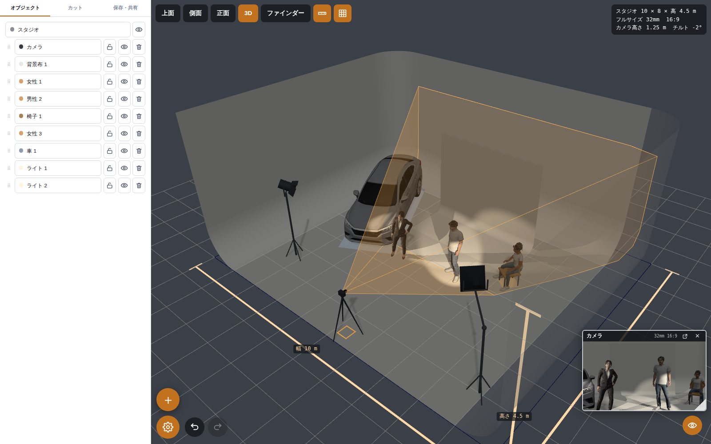

スタジオの広さ、立ち位置、カメラの画角。
ブラウザで、30 秒で。
撮影の準備と打合せのための 3D。登録もインストールも要らない。現場に要る「一枚の絵」と「一枚の図面」を、A4 の用紙と共有リンクにする。

無料登録なしインストールなし
スマホ・タブレット・PC圏外でも開く日本語 / English
2 分で分かる紹介動画
人物を置くところから、用紙を出すところまで。
現場が知りたい 3 つの答え
入るのか、カメラに何が写るのか、何を配るのか。

入るのか
スタジオの寸法とホリゾント。人・車・機材が実寸で図面に載り、寸法が付く。角をつまめば大きさも変わる。

カメラに何が写るのか
センサーのフォーマットと焦点距離を選んで、カメラの目で見る。鏡の映り込みも背景布も本物どおり。

何を配るのか
カットごとに A4 一枚。ブラウザから印刷。リンクか QR を配れば、どのスマホでも同じ配置が開く。
CG スタッフではなく、現場の人のために
説明書なしで、誰でも 30 秒で答えが出るように。
プロダクションマネージャーこのスタジオで足りるか。予約の前に図面を送る。
カメラマンレンズと立ち位置を、ファインダーで先に決めておく。
照明ライトの位置と向き。図面では記号、絵では光。
ディレクター誰も入る前に、ポーズ付きの人物で段取りを試す。
できること
ぜんぶブラウザの中で動く。データは端末の中に残る。
- 人物 14 体とポーズ — 大人と子ども、立つ・座る・寝る、指まで動く
- 写真からポーズ — 写した姿勢がそのまま乗る。写真はどこにも送らない
- 車・小道具・機材 — 車、椅子、テーブル、箱馬、イントレ、カポック、ディスプレイ
- ライト — 5 つの型、スタンドとブーム、チルト・広がり・色、絵には影
- 鏡と背景布 — 映り込みが本物どおり、R 付きのホリゾント
- ロケ地のスキャン（3DGS） — ガウシアンスプラットのスキャンを実寸で置いて、その中で組む
- 自分の 3D モデル — GLB と FBX。寸法は自動
- カット — 1 つの図面に複数のカット、用紙はカットごと
- リンクと QR で共有 — 配置は URL の中。サーバーもアカウントも無い
- オフライン — 一度開いた端末は圏外でも開く。1 枚の HTML にも書き出せる
- 取り消し・ロック・複製 — それと、何でも測れる定規
- 英語表示 — ブラウザの言語で自動
ポケットのスマホで
ホーム画面に置けばアプリのように開く。つまむ、引く、長押し。送られた図面はリンクから開く。
パネルは畳めて、つまみは指の大きさ。ファインダーはセンサーどおりの絵を出す。

約束していること
アカウントは作らない登録の壁がいちばんの離脱。だから無い。
無料オープンソース（MIT）。人物モデルは作者自身のもの。
データは手元に残る図面・写真・取り込んだモデルは端末から出ない。計るのは訪問数だけ、Cookie も使わない。
機種名のリストを持たないセンサーはフォーマットで持つ。規格は数十年変わらないから、古くならない。
よくある質問
iPhone や iPad で動きますか
Safari で動きます。ホーム画面に追加すると全画面で開きます。Android と PC のブラウザも同じです。
図面はどこに保存されますか
ブラウザの中、その端末の中です。共有リンクに配置がまるごと入っているので、リンクを持っていれば図面を持っていることになります。無くすサーバーがありません。
ポーズ用の写真はどこかに送られますか
送られません。姿勢の検出はブラウザの中で動きます。写真は一度読んで捨て、残るのは関節の位置だけです。
レンズの画角はどのくらい正確ですか
選んだフォーマットと焦点距離に対して幾何学的に正確です。特定の機種は真似しません。その必要が無いからです。
自分のスタジオやロケ地を入れられますか
寸法を打ち込むか、3D モデルを取り込むか、スマホで撮った 3D ガウシアンスプラットのスキャンを置くかの 3 つです。